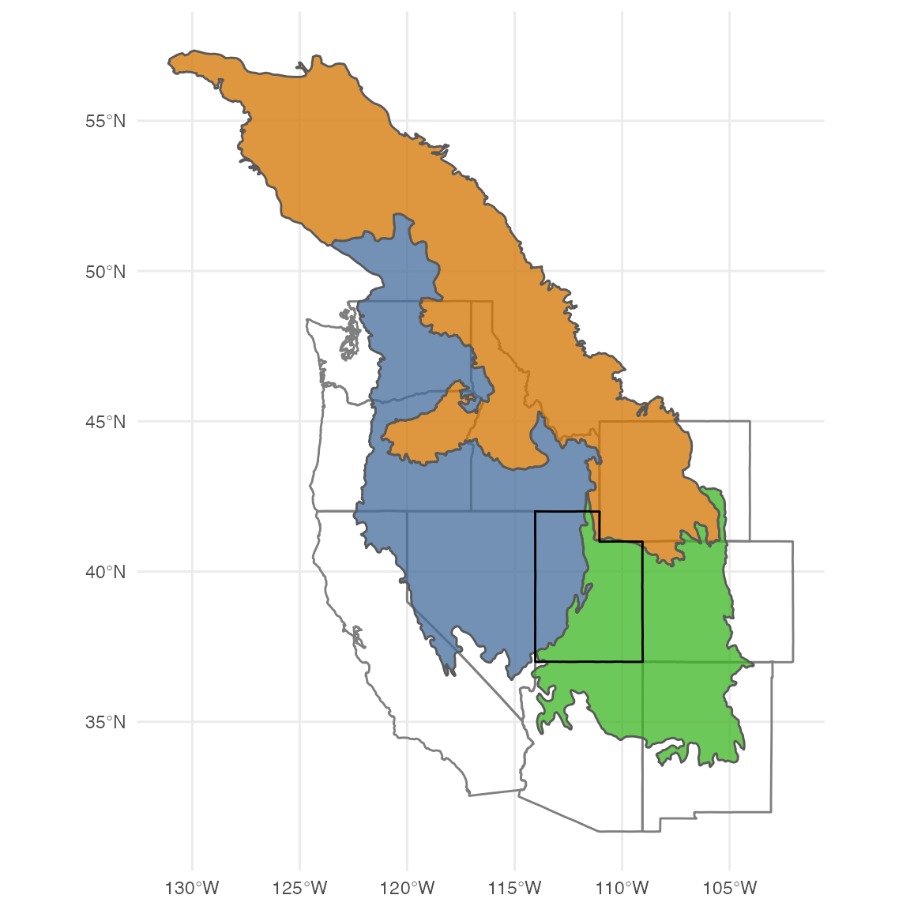

Intro to data wrangling
Population growth of Eurasian collared-doves in Utah
WILD6900
2019-01-17
wrangling_bbs.RmdIn this lab, we will starting learning some useful tools and principles for preparing raw data for visualization and analysis. Many of the core principles of so called “data wrangling” are embodied by the tidyverse, a family of packages created to make tidying, manipulating, and visualizing data and model output more intuitive and consistent. Use of the tidyverse is somewhat controversial and it is worth noting that everything we will do in the lab can be done using base R or non-tidyverse packages. Nonetheless, I find the tidyverse useful because it is opinionated. The developers of the tidyverse have spent a great deal of time thinking about how data should be stored, manipulated, and visualized and they have created an entire ecosystem of functions built around these principles. Using the tidyverse isn’t so much about the tools themselves as it is about thinking about the structure and manipulation of data. For better or worse, focusing on consistent application of these principles is not something base R encourages.
Objectives
Prepare raw data for analysis using reproducible code
- Learn/review basic data manipulation tasks, including:
- Creating tidy data frames
- Subsetting observations
- Joining data frames
- Sorting data frames based on specific column values
- Adding new variables
- Working with dates
- Performing operations on grouped data
- Create summaries of raw data
- Saving data
-
Rfunctions used in this exercise:
Data and context

Image courtesy of Charles J Sharp via Wikicommons (CC BY-SA 4.0)
For this exercise, we will use data from the North American Breeding Bird Survey to examine the rapid population growth of Eurasian collared-doves (Streptopelia decaocto) in the state of Utah. Preparing the raw BBS data for analysis is challenging due the complexity and idiosyncrasies of data. For these reasons, preparing these data offers many good lessons for data manipulation in general. These data also lend themselves to a number of the models we will discuss this semester so this lab will form the basis for future labs.

Eurasian collared-doves are an introduced species that, as you will soon see, have been rapidly expanding westward across the United States. In this lab, we will focus on cleaning and visualizing the raw data. In future labs, we will use these data and code to quantify population growth of this and other species.
Create a new project
Using the instructions from the Projects and directories lesson, create a new Project called bbs_analysis.
Within the new bbs_analysis directory, create a sub-directory called data
bbs_analysis/
|─── data/Create a new script and save it as data_prep.R within the data/ sub-directory
bbs_analysis/
|─── data/
|─── data_prep.RAs we work through this exercise, you can copy the code from this file into that script.
Getting the data
First, let’s load the packages we will need for this exercise:
Rather that starting from the survey-wide data, the WILD6900 package includes data from just the BBS routes within the Bird Conservation Regions that make up the state of Utah. You can access those data using the data() function:
Data structure
Raw BBS data is divided between three separate files:
-
routes: Geographic location and associated data for each route
- 1 row per route
-
weather: Covariate values for each route in each year that it was monitored
- 1 row per route per year
-
counts: species-specific counts for each route in each year
- 1 row per route per year
The example data we will used is included as a list with the three files as separate data frames. You can see the fields included in each data frame using:
| countrynum | statenum | Route | Active | Latitude | Longitude | BCR | RouteTypeID | routeID |
|---|---|---|---|---|---|---|---|---|
| 124 | 4 | 5 | 0 | 49.63 | -114.6 | 10 | 1 | 12404005 |
| 124 | 4 | 10 | 1 | 50.48 | -114.4 | 10 | 1 | 12404010 |
| 124 | 4 | 16 | 0 | 51.10 | -115.1 | 10 | 1 | 12404016 |
| 124 | 4 | 17 | 1 | 51.46 | -116.2 | 10 | 1 | 12404017 |
| 124 | 4 | 24 | 1 | 52.26 | -116.4 | 10 | 1 | 12404024 |
| 124 | 4 | 25 | 1 | 52.73 | -117.6 | 10 | 1 | 12404025 |
| RPID | Year | Month | Day | ObsN | StartTemp | EndTemp | StartWind | EndWind | StartSky | EndSky | StartTime | EndTime | Assistant | RunType | routeID |
|---|---|---|---|---|---|---|---|---|---|---|---|---|---|---|---|
| 101 | 1973 | 6 | 23 | 1090178 | 50 | 55 | 5 | 2 | 5 | 5 | 503 | 852 | 0 | 0 | 12404005 |
| 101 | 1975 | 6 | 21 | 1090178 | 50 | 65 | 2 | 2 | 1 | 1 | 500 | 930 | 0 | 1 | 12404005 |
| 101 | 1985 | 6 | 26 | 1150442 | 42 | 59 | 0 | 1 | 0 | 0 | 500 | 925 | 0 | 1 | 12404005 |
| 101 | 1986 | 6 | 22 | 1150442 | 46 | 54 | 5 | 4 | 1 | 2 | 500 | 933 | 0 | 0 | 12404005 |
| 101 | 1987 | 6 | 28 | 1150442 | 53 | 64 | 2 | 2 | 1 | 1 | 500 | 938 | 0 | 1 | 12404005 |
| 101 | 1988 | 6 | 25 | 1150442 | 47 | 62 | 0 | 0 | 0 | 0 | 500 | 926 | 0 | 1 | 12404005 |
| Year | routeID | 10 | 11 | 12 | 20 | 30 | 40 | 60 | 70 |
|---|---|---|---|---|---|---|---|---|---|
| 1968 | 12411004 | 0 | 0 | 0 | 1 | 0 | 0 | 0 | 0 |
| 1968 | 12411005 | 0 | 0 | 29 | 0 | 0 | 0 | 0 | 0 |
| 1968 | 12411009 | 0 | 0 | 0 | 0 | 0 | 0 | 0 | 0 |
| 1968 | 12411018 | 0 | 0 | 0 | 0 | 0 | 0 | 0 | 1 |
| 1968 | 12411020 | 0 | 0 | 1 | 0 | 0 | 0 | 5 | 8 |
| 1968 | 12411023 | 0 | 0 | 0 | 0 | 0 | 0 | 0 | 1 |
For additional information about what each field represents, see the documentation page (?bbs_data).
Subsetting the Utah routes
The bbs_data file contains counts from three BCRs (9, 10, and 16) but right now we only want data from Utah. There are many ways to subset data in R but for the sake of consistency, we will use the filter() function from the dplyr package.
NOTE
There is also a filter() function in the stats package. Even though we loaded dplyr, it can sometimes be confusing to know which functions come from which packages (or to know which function R will default to using). For this reason, it’s good practice to get in the habit of using the package::function() syntax, as we will do below. Using this syntax makes explicit which package/function you intend to use which makes your code easier for other to understand and reduces the potential for errors. As a benefit, you can stop using library(package) at the beginning of each script.
The BBS state number for Utah is 85 so we filter based on the statenum field in the routes data frame:
Unfortunately, neither the weather nor the counts data frames contain the statenum field. How do we subset the correct routes in this case? By using the one field common to all three data sets: routeID. So the challenge is to tell R to keep only the routes that are shared by the new ut_routes object and the weather and counts data frames. There are a few ways this could be done but one easy way is to filter using the %in% expression rather than == (%in% compares a vector x on the left-hand side to a second vector y on the right-hand side, returning TRUE for all values of x that are in y and FALSE otherwise):
## Subset weather and count using Utah routes
ut_weather <- dplyr::filter(bbs_data$weather, routeID %in% ut_routes$routeID)
ut_counts <- dplyr::filter(bbs_data$counts, routeID %in% ut_routes$routeID)The routeID field is critical because it is the sole variable that links all three data frames together. It is common practice to divide up data into multiple files so having an ID field of some sort that links observational units across all files is critical!
Subsetting the dove data
At present, ut_counts contains counts of all species. Each column (aside from Year and routeID) gives the number of individuals of each species counted on each route in each year. The column names refer to the numeric aou code used by BBS to identify species (Eurasian collared-dove is 22860). To get those data, we could use dplyr::select():
However, there are a number of problems with the resulting data frame.
What is tidy data?
The first problem with this data frame is that one of the column names is numeric. That’s not technically illegal (the data frame exists, after all), but it’s not great practice. At the very least, you have to put back ticks around the column name to reference it (as we did above). Better to stick with non-numeric names, at least for the first character of a column name.
The bigger issue, however, is that this data frame isn’t tidy. What does it mean for data to be tidy? Essentially, “each variable is a column, each observation is a row.” In the ut_counts data frame, we have four main variables: year, routeID, the aou codes, and the counts themselves. Each observation is the count of a single species at a single route in a single year. As formatted, we have one variable (aos code) spread across multiple columns and multiple observations per row. That format makes it hard to use the data. How would you plot the counts of a given species by year? How would you write a model for counts ~ Year by species? The short answer is you can’t without a lot of intermediate steps. In contrast, having tidy data makes these tasks much easier and consistent (as we will soon see). They are easier because many R functions take vectors as input. In a tidy data frame, each column
So before we subset the dove data, let’s tidy the ut_counts data frame. We can do this with a single functions from the tidyr package:
tidy_counts <- tidyr::gather(ut_counts, key = "aou", value = "count", -Year, -routeID)
head(tidy_counts)| Year | routeID | aou | count |
|---|---|---|---|
| 1968 | 84085006 | 10 | 0 |
| 1968 | 84085007 | 10 | 0 |
| 1968 | 84085011 | 10 | 0 |
| 1968 | 84085012 | 10 | 0 |
| 1968 | 84085015 | 10 | 0 |
| 1968 | 84085020 | 10 | 0 |
Gather turns a “wide” data frame into a “long” data frame (awesome animations courtesy of Garrick Aden-Buie).

Now we can simply use dplyr::filter() to subset the dove counts:
Filling in missing counts using joins
One of the main challenges to working with BBS data is that not all routes are run in every year. If we use the counts as the response in a model (which we will shortly), we often need them to be in a square matrix (one row for each route, one column for each year). So the next step in our preparation of the data is to add those missing counts as NAs.
As always, there are multiple ways we could solve this problem. One efficient (though maybe not immediately intuitive) way to add the NA counts is the join the dove_counts data frame with a data frame that contains all of the route/year combinations in a way that fills in NA’s if there is no corresponding route/year combination. Although not difficult to code, understanding how this works requires understanding the different types of joins available in the tidyverse.
Joins
The join functions do exactly what they say - join two are more data frames. However, the manner in which they join and the output they produce varies depending on the type of join. In general, joins are divided into two categories:
- Mutating joins
A mutating join allows you to combine variables from two tables. It first matches observations by their keys, then copies across variables from one table to the other
- Filtering joins
Filtering joins match observations in the same way as mutating joins, but affect the observations, not the variables
This difference will be more clear after looking at a few examples.
Mutating joins
Mutating joins include inner_join(), left_join(), right_join(), and full_join() (note that all of these functions come from the dplyr package). Let’s start with full_join(), which produces a new data frame that includes all rows and columns from the two original data frame (call them x and y):

(x <- data.frame(id = c(1,2,3), x = c("x1", "x2", "x3")))
(y <- data.frame(id = c(1,2,4), y = c("y1", "y2", "y4")))
dplyr::full_join(x, y)| id | x |
|---|---|
| 1 | x1 |
| 2 | x2 |
| 3 | x3 |
| id | y |
|---|---|
| 1 | y1 |
| 2 | y2 |
| 4 | y4 |
| id | x | y |
|---|---|---|
| 1 | x1 | y1 |
| 2 | x2 | y2 |
| 3 | x3 | NA |
| 4 | NA | y4 |
Note that if there is not a matching values (id = 3 and id=4), full_join() returns NA
The remaining mutating joins do modified versions of what full_join() does. left_join() keeps all rows from x (or the “left” data frame in the arguments) and all columns from both x and y. Rows in y that are not shared with x (id = 4) are dropped from the resulting data frame:

| id | x | y |
|---|---|---|
| 1 | x1 | y1 |
| 2 | x2 | y2 |
| 3 | x3 | NA |
right_join() does the same thing but in reverse (so left_join(x,y) produces the same output as right_join(y,x))
inner_join() is the most restrictive the the mutating joins. It returns only rows from x where there are matching values in y:

| id | x | y |
|---|---|---|
| 1 | x1 | y1 |
| 2 | x2 | y2 |
Note that all of these functions first look for columns with the same name (in this case id) and joins by that (or those) column(s).
Filtering joins
In the examples above, the resulting data frame contained all of the columns from both x and y. Filtering joins are different in that they only keep the columns from the first data frame. For example, semi_join() returns all rows from x with matching values of y but only returns the original columns in x:

| id | x |
|---|---|
| 1 | x1 |
| 2 | x2 |
This is useful for getting rid of rows in x that are not shared with y (similar to the way we used filter() to keep only rows we wanted in the BBS data frames).
anti_join() returns rows from x where there are not matching values in y:

| id | x |
|---|---|
| 3 | x3 |
Back to the missing counts
So how can we use a join to add the NA counts? First, we need a data frame that contains one row for every route/year combination.
## Create vector containing all of the routeIDs in the dove count data frame
routes <- unique(dove_counts$routeID)
## Create vector containing all of the years in the data set
years <- seq(from = min(dove_counts$Year), to = max(dove_counts$Year))
## Use expand.grid to create data frame with all route/year combinations
route_year <- expand.grid(routeID = routes, Year = years)
head(route_year)| routeID | Year |
|---|---|
| 84085006 | 1968 |
| 84085007 | 1968 |
| 84085011 | 1968 |
| 84085012 | 1968 |
| 84085015 | 1968 |
| 84085020 | 1968 |
expand.grid() is a useful function. It takes 2 or more vectors and creates a data frame with one row for each combination of values. This can be very useful for creating factorial combinations of different experimental treatments or simulation parameters.
Now all we have to do is join this new data frame to dove_counts using the correct join function:
| Year | routeID | aou | count |
|---|---|---|---|
| 1968 | 84085006 | 22860 | 0 |
| 1968 | 84085007 | 22860 | 0 |
| 1968 | 84085011 | 22860 | 0 |
| 1968 | 84085012 | 22860 | 0 |
| 1968 | 84085015 | 22860 | 0 |
| 1968 | 84085020 | 22860 | 0 |
The dove_counts data frame is currently sorted by Year in increasing order, meaning that observations for each routes are mixed up throughout the data frame. It might be easier to view this data if it was sorted by routeID so that counts for each route are together. The tidyverse way to sort data frames is dplyr::arrange()
| Year | routeID | aou | count |
|---|---|---|---|
| 2015 | 84085001 | NA | NA |
| 2014 | 84085001 | NA | NA |
| 2013 | 84085001 | NA | NA |
| 2012 | 84085001 | NA | NA |
| 2011 | 84085001 | 22860 | 0 |
| 2010 | 84085001 | 22860 | 0 |
In this case, we added a second sorting variable so that within each route, counts are sorted by Year in decreasing order (that is what the - does). This gives us the most recent counts first.
Adding covariates
We can also use joins to add relevant covariates associated with each count. For example, it would be nice to have the lat/long of each route associated with the counts:
## Add route location information
dove_counts <- dplyr::left_join(dove_counts, ut_routes)
head(dove_counts)| Year | routeID | aou | count | countrynum | statenum | Route | Active | Latitude | Longitude | BCR | RouteTypeID |
|---|---|---|---|---|---|---|---|---|---|---|---|
| 2015 | 84085001 | NA | NA | 840 | 85 | 1 | 0 | 41.44 | -113.1 | 9 | 1 |
| 2014 | 84085001 | NA | NA | 840 | 85 | 1 | 0 | 41.44 | -113.1 | 9 | 1 |
| 2013 | 84085001 | NA | NA | 840 | 85 | 1 | 0 | 41.44 | -113.1 | 9 | 1 |
| 2012 | 84085001 | NA | NA | 840 | 85 | 1 | 0 | 41.44 | -113.1 | 9 | 1 |
| 2011 | 84085001 | 22860 | 0 | 840 | 85 | 1 | 0 | 41.44 | -113.1 | 9 | 1 |
| 2010 | 84085001 | 22860 | 0 | 840 | 85 | 1 | 0 | 41.44 | -113.1 | 9 | 1 |
We don’t need all of those columns so let’s remove some by using dplyr::select(), which allows you to select only the columns you want to keep in a data frame (note - putting a minus sign before the column name removes the column):
## Remove unneeded columns
dove_counts <- dplyr::select(dove_counts, -countrynum, -statenum, -Route, -Active)
head(dove_counts)| Year | routeID | aou | count | Latitude | Longitude | BCR | RouteTypeID |
|---|---|---|---|---|---|---|---|
| 2015 | 84085001 | NA | NA | 41.44 | -113.1 | 9 | 1 |
| 2014 | 84085001 | NA | NA | 41.44 | -113.1 | 9 | 1 |
| 2013 | 84085001 | NA | NA | 41.44 | -113.1 | 9 | 1 |
| 2012 | 84085001 | NA | NA | 41.44 | -113.1 | 9 | 1 |
| 2011 | 84085001 | 22860 | 0 | 41.44 | -113.1 | 9 | 1 |
| 2010 | 84085001 | 22860 | 0 | 41.44 | -113.1 | 9 | 1 |
Now let’s add some of the relevant data from the weather data frame. We’ll use select first, then join:
## Remove unneeded columns
ut_weather <- dplyr::select(ut_weather, RPID, Year, Month, Day, ObsN, RunType, routeID)
## Add run covariates to counts
dove_counts <- dplyr::left_join(dove_counts, ut_weather)
head(dove_counts)| Year | routeID | aou | count | Latitude | Longitude | BCR | RouteTypeID | RPID | Month | Day | ObsN | RunType |
|---|---|---|---|---|---|---|---|---|---|---|---|---|
| 2015 | 84085001 | NA | NA | 41.44 | -113.1 | 9 | 1 | NA | NA | NA | NA | NA |
| 2014 | 84085001 | NA | NA | 41.44 | -113.1 | 9 | 1 | NA | NA | NA | NA | NA |
| 2013 | 84085001 | NA | NA | 41.44 | -113.1 | 9 | 1 | NA | NA | NA | NA | NA |
| 2012 | 84085001 | NA | NA | 41.44 | -113.1 | 9 | 1 | NA | NA | NA | NA | NA |
| 2011 | 84085001 | 22860 | 0 | 41.44 | -113.1 | 9 | 1 | 101 | 6 | 23 | 1190853 | 1 |
| 2010 | 84085001 | 22860 | 0 | 41.44 | -113.1 | 9 | 1 | 101 | 6 | 24 | 1190853 | 1 |
Adding new columns
A common task during data preparation is adding new variables that are derived from variables in the raw data. Remember the first rule of working with data - raw the data is read only. Don’t get in the habit of creating new variables in excel. Instead, do it in R within the data_prep.R script so you have a paper trail of exactly what you did.
In the tidyverse, the workhorse of adding new variables in dplyr::mutate() (though other functions add new columns as we will see). Let’s use mutate to add a new variable that indicates whether it was a BBS observer’s first time running a BBS route (there is a well-known “learning” effect in the BBS. Observers tend to count fewer birds during their first year). We’ll call this column novice and it will contain a 1 if it’s the first time an observer is in dove_counts data frame and 0 otherwise.
A quick way to see if a value has been repeated in a vector is the duplicated function which returns 0 for the first time a value occurs in the vector and 0 otherwise. That’s the opposite of what we want so we switch the values by again using the ! operator.
Before we add the new variable, remember that our data frame is sorted by Year in decreasing order (2015 first). duplicated() doesn’t know this so it will give us a 1 for the last year of an observers service rather than the first. So before we at the new column, let’s use arrange() again to sort by Year in increasing order:
dove_counts <- dplyr::arrange(dove_counts, routeID, Year)
dove_counts <- dplyr::mutate(dove_counts, novice = !duplicated(ObsN))There are many other columns that could be created depending on the factors we think might influence counts (remember that the counts are a mix of the state and observation processes - factors of interest might influence the process, i.e., the actual number of birds, or the observations or both). One factor that could influence both the process and observation processes is the day of the year that a count took place (maybe individuals are more common at certain times of year or maybe they are more easily detected at certain times of year). Adding day of the year also provides an exercise in a particularly headache-inducing topics: dates.
Working with dates
Dates are a perpetual headache in R. The tidyverse package lubridate at least attempts to make things easier by providing an intuitive, consistent way to handle dates. Let’s explore this package by converting the Year, Month, and Day columns into a specific object class called Date.
To convert these columns as dates, we first need to combine them into a single variable that contains all three pieces of information. In the tidyverse, combining the values of multiple columns into a single value is done using tidyr::unite(). We need to tell unite the name of the new column (we’ll call it date), a vector with the columns we want to unite (c("Month", "Day", "Year")), and the separator to use between values (default is _ but we’ll use /):
## Add date
dove_counts <- tidyr::unite(dove_counts, "date", c("Month", "Day", "Year"), sep = "/", remove = FALSE)
head(dove_counts)| date | Year | routeID | aou | count | Latitude | Longitude | BCR | RouteTypeID | RPID | Month | Day | ObsN | RunType | novice |
|---|---|---|---|---|---|---|---|---|---|---|---|---|---|---|
| NA/NA/1968 | 1968 | 84085001 | NA | NA | 41.44 | -113.1 | 9 | 1 | NA | NA | NA | NA | NA | TRUE |
| 7/15/1969 | 1969 | 84085001 | 22860 | 0 | 41.44 | -113.1 | 9 | 1 | 101 | 7 | 15 | 1080065 | 0 | TRUE |
| 7/23/1970 | 1970 | 84085001 | 22860 | 0 | 41.44 | -113.1 | 9 | 1 | 101 | 7 | 23 | 1080065 | 0 | FALSE |
| 6/29/1971 | 1971 | 84085001 | 22860 | 0 | 41.44 | -113.1 | 9 | 1 | 101 | 6 | 29 | 1080065 | 1 | FALSE |
| 6/30/1972 | 1972 | 84085001 | 22860 | 0 | 41.44 | -113.1 | 9 | 1 | 101 | 6 | 30 | 1080065 | 1 | FALSE |
| 6/21/1973 | 1973 | 84085001 | 22860 | 0 | 41.44 | -113.1 | 9 | 1 | 101 | 6 | 21 | 990140 | 1 | TRUE |
Note that by default unite removes the original columns (we will need the Year column later which is why remove = FALSE).
By default, unite makes the new column a character string. We need to tell R that these are actually dates. This is where the lubridate package comes in handy. There are a number of functions to covert character strings into dates depending on the format of the date. In this case, our dates are Month/Day/Year so the function we want is mdy (see the pattern?):
#> Warning: 3427 failed to parse.The lubridate functions that convert strings to dates (dmy, ymd, etc.) try to be smart about the separator used to separate months, days and years. If you work with dates in your own data, get in the habit of converting them into actual class(Date) using lubridate as part of your data preparation. This will make your life much easier when you need to use these dates in your modeling. Once you have a variable that is class(Date), lubridate has many functions for converting dates into other formats. For example, raw dates are often not the covariate we will use in the model. We may not care about the specific month or year but instead the day of the year. We can easily covert the dates into day of the year (January 1st = 1; lubridate will automatically handle leap years)
Grouped variables
Another issue that comes up often during the data cleaning phase is needed to perform operations on groups of data rather than the entire data set. In other words, we need to split the data into smaller groups, perform some operation on each group, and then recombine the groups back into a single data frame. Fortunately, dplyr has special functions that make this easy and avoid having to manually separate and recombine the data frame. The work horse of these tasks is dplyr::group_by(). As you will see, group_by() is very powerful when combined with other functions such as mutate().
For example, maybe observers get worse as they get older because it’s harder from them to see/hear the birds. If we want to include “experience” of each observer in our model, we need a new column indicated the number of years of service for each observer (first year = 1, second year = 2, etc). This is harder than it sounds.
For each time an observer in listed in the data frame, what we are trying to do is essentially sum the number of times the observer has already been listed. Something like this:
| Obs | Experience |
|---|---|
| 1 | 1 |
| 1 | 2 |
| 1 | 3 |
| 1 | 4 |
| 1 | 5 |
| 1 | 6 |
| 1 | 7 |
| 1 | 8 |
| 1 | 9 |
| 1 | 10 |
What you might notice here is the the experience column is the cumulative sum of the obs column. R has a built in function called cumsum() for estimating the cumulative sum of a vector:
We need to perform the cumulative sum on each observer separately. But there’s a problem - some observers do more than one route per year. If we include those duplicated ObsN/Year combination, we will inflate the experience metric.
dplyr::filter(dove_counts, ObsN == 981319 & Year == 2015)
#> date Year routeID aou count Latitude Longitude BCR RouteTypeID
#> 1 2015-06-05 2015 84085002 22860 1 41.26 -112.5 9 1
#> 2 2015-06-03 2015 84085152 22860 0 41.58 -112.1 9 1
#> RPID Month Day ObsN RunType novice day
#> 1 101 6 5 981319 1 FALSE 5
#> 2 101 6 3 981319 1 FALSE 3
nrow(dove_counts)
#> [1] 5473
## Create a new data frame so we don't lose counts when we remove duplicates
experience_df <- dplyr::distinct(dove_counts, ObsN, Year)
dplyr::filter(experience_df, ObsN == 981319 & Year == 2015)
#> Year ObsN
#> 1 2015 981319
nrow(experience_df)
#> [1] 1082Now we’re ready to estimate experience. Remember that we need to estimate experience for each observer separately. This is where group_by() comes in. We use group_by() to tell dplyr that we want to perform all subsequent operations on each observer:
experience_df <- dplyr::group_by(experience_df, ObsN)
experience_df
#> # A tibble: 1,082 x 2
#> # Groups: ObsN [196]
#> Year ObsN
#> <int> <int>
#> 1 1968 NA
#> 2 1969 1080065
#> 3 1970 1080065
#> 4 1971 1080065
#> 5 1972 1080065
#> 6 1973 990140
#> 7 1974 990140
#> 8 1975 NA
#> 9 1976 NA
#> 10 1977 NA
#> # ... with 1,072 more rowsNotice that when you view the data frame now you see a header saying Groups: ObsN [196]. This tells us that the data frame is grouped by ObsN and there are 196 groups (you may also have noticed the data frame has been converted to a tibble, which is a special type of data frame with some special properties (notice that we didn’t use head() and yet we only see the first 10 rows on the data frame). We won’t go into that now but you can learn more with ?tibble).
Now here’s the trick for estimating experience with cumsum. We will we add a column of ones to the experience_df data frame and use cumsum to sum that column for each observer (basically recreating the data frame above for each observer). Start by adding the ones column:
Now we’ll use mutate() with cumsum to create the experience metric:
One last tweak - all of the NA counts have NA observers and our experience metric added up the ones for those values too. Let’s change those back to NA and then remove the ones column and join experience_df with dove_counts to add the experience metric back to the count data frame:
experience_df$experience[is.na(experience_df$ObsN)] <- NA
experience_df <- dplyr::select(experience_df, -ones)
dove_counts <- dplyr::left_join(dove_counts, experience_df)What is the most number of years of service by one observer?
Save the data frame
Now that we have a clean data frame with all of the covariates of interest, let’s save this object so that we can use it in the future without having to rerun all of these steps. There are many ways to save objects in R but one of the most well-behaved is saveRDS().
When you want to use this object in the future, all you have to do is run:
Data summaries
Why stop here? Right now, our counts are at the route-level - ultimately, this is the way we want it. That allows us to build a model directly from the raw observations rather than derived variables. However, using the raw counts involves some modeling complexities that we have not discussed yet. So in the meantime, it might be useful to ignore the route-level variation in counts and just work with the total number of doves counted in each year.
We already learned about using group_by to add new columns by performing operations on groups of data. In this case, we again need to group the data but this type by Year. But mutate won’t work for this purpose. We don’t want to add a new observation but instead summarize the counts in each year. In other words, we don’t want to add # routes x # years new values, we want # years new observations. This task is performed by dplyr::summarise(), which takes a data frame and creates a new data frame based on specified summaries of the original data. In our case, the summary we want is sum:
## Group by year
total_dove_counts <- dplyr::group_by(dove_counts, Year)
## Create annual total counts (note the need for na.rm = TRUE because we have NA counts)
total_dove_counts <- dplyr::summarise(total_dove_counts, Count = sum(count, na.rm = TRUE))
total_dove_counts
#> # A tibble: 48 x 2
#> Year Count
#> <int> <dbl>
#> 1 1968 0
#> 2 1969 0
#> 3 1970 0
#> 4 1971 0
#> 5 1972 0
#> 6 1973 0
#> 7 1974 0
#> 8 1975 0
#> 9 1976 0
#> 10 1977 0
#> # ... with 38 more rowsAgain, creating summaries is a very common data cleaning task and dplyr has a lot of powerful functions for doing all kinds of summaries (check out this entire blog series for some great lesser known dplyr functions). Getting to know these functions can save you a lot of lines of code for some of the more complex summaries you might need to make.
Let’s quickly visualize how the number of collared-doves counted in Utah has changed over time:

That’s a big increase! We will look at this increase in more detail during later lectures when we learn to develop Bayesian models. For that reason, let’s save this data frame as well: